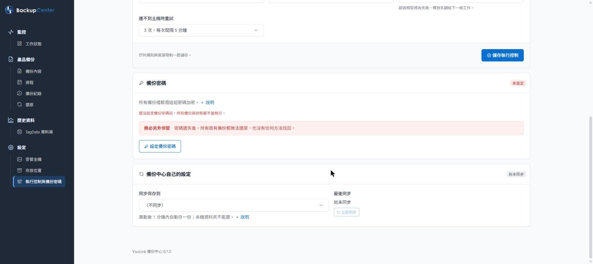

執行控制與備份密碼
備份會大量使用 I/O 與記憶體，這裡決定工作的先後順序與資源限制；也在這裡設定所有備份檔共用的備份密碼。產品備份與 TagData 共用同一個佇列。
設定與變更備份密碼

- 按「設定備份密碼」。
- 輸入「新的備份密碼」（至少 12 字元）並「再輸入一次」，按「儲存」。
- 要變更時按「變更備份密碼」，先輸入「目前的備份密碼」再輸入新的。
右上角顯示「已設定」與設定時間；工作狀態的「尚未設定備份密碼」消失。
所有備份檔都用這組密碼加密（AES-256-GCM），設定裡的連線密碼也是。備份中心只存驗證資料，密碼遺失後所有既有備份都無法還原，也沒有任何方法找回，請務必另外保管。變更後只套用到之後的新備份；舊備份仍需要舊密碼。
到了新機器，只要有存放位置與這組密碼就能還原。
佇列規則

- 全系統同時執行上限
- 1～4 個，超過的工作排隊等候。
- 同一台實體主機
- 固定同時 1 個；同主機上的 VL、DG、多個 Agent 依序執行。
- 同一個存放位置
- 同時 1 或 2 個，避免多個工作同時寫入拖慢 NAS。
- 手動備份排在等待中的排程工作前面
- 勾選後手動備份優先。
- 同時觸發時依 DG → Agent → VL 的順序
- 與整套還原的順序一致。
- 調整欄位。
- 按頁面下方「儲存執行控制」（佇列規則與資源限制一起儲存）。
之後的工作依新規則排隊。
單一工作的資源限制
- 寫入速度上限
- 不限制、50、20 或 5 MB/s。
- 執行優先權
- 一般，或低（不影響產品運作）。
- 逾時
- 1、3、6、12 小時；超過時間視為失敗，釋放名額給下一個工作。
- 連不到主機時重試
- 不重試，或 3 次、每次間隔 5 分鐘。
- 依產品主機的負荷調整欄位。
- 按「儲存執行控制」。
各產品執行備份時套用這些限制。
失敗時先查
- 備份拖慢產品：降低寫入速度上限，或把執行優先權改成「低」。
- 大型備份逾時失敗：把逾時調長。